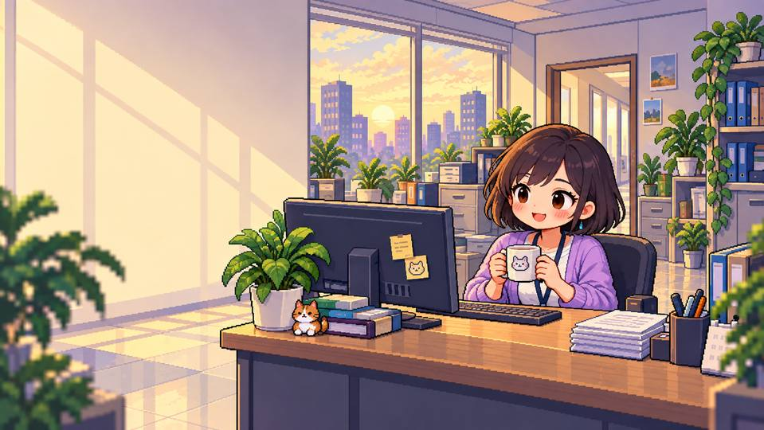

OFFICE ESCAPE CLUB
今天摸鱼了吗
?
Ⅱ
打工人的快乐生存指南
10 DAYS
精力
80.0
技能
0 / 40
Lv.1
老板好感
50
快乐
0.0

风平浪静 · 给自己留一点快乐
上班，是为了更好地下班。
工位 008 / 周一也要快乐
今日任务 / 日常工作
0.0 / 24
准备好开始今天了吗？
评估目标 ↗
摸鱼方式
发呆
收手 0.2s
手机
收手 1.2s
▤
努力工作
成长 + 交付
><((°>
摸一会儿
恢复精力 + 快乐
▱▱
假装很忙
少耗精力 · 有风险